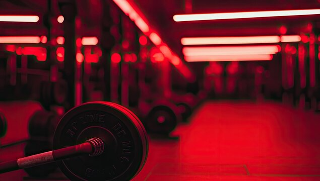

Welcome to my personal website!
This is a simple website created as part of a web development course. Here I just wanted to talk about how much I like CS2. It is one of my favourite games and I play it regularly, another aspect that I like about the game is, is that it has it's own economy commonly known as the skins economy.
I Personally collect a few skins myself. I only got into it recently but I consider it a hobby.
My Other Hobby
Apart from gaming, I also enjoy going to the gym. I find it to be a great way to stay fit and relieve stress. I usually go to the gym a few times a week, and I focus on weightlifting and cardio exercises. It's a great way to improve my physical health and overall well-being.
I also find it enjoyable to challenge myself and see progress in my strength and endurance. Overall, going to the gym is an important part of my lifestyle and helps me maintain a healthy balance between work and leisure activities.
